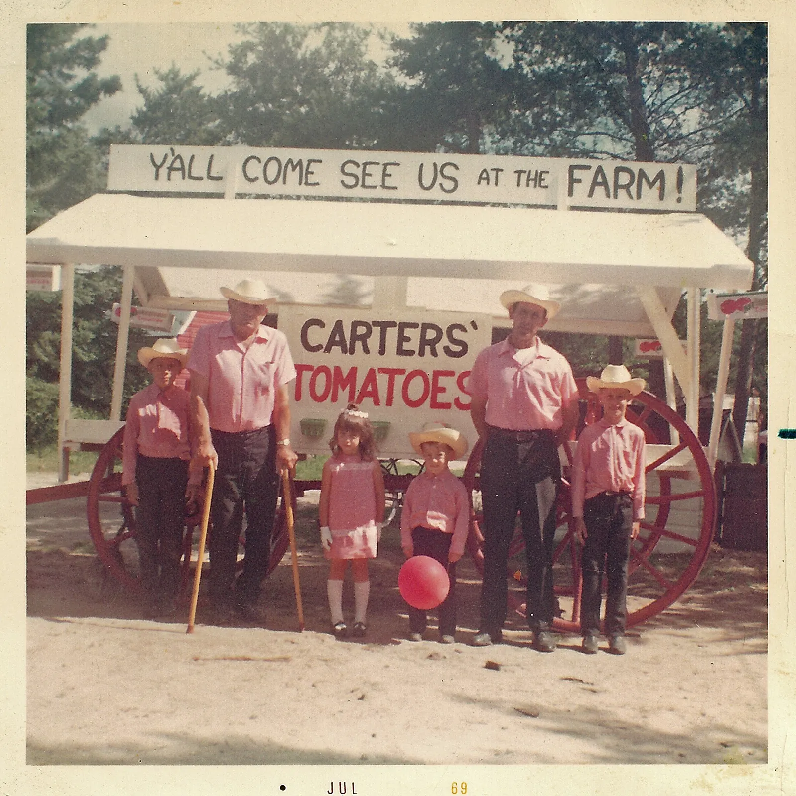

Carters' Tomatoes, July 1969People, land, community
We were founded in 1955 by Russell and Maxine Carter. That year Russell planted the first Carters' Tomatoes and sold produce from a roadside stand.
- 1955Russell and Maxine Carter start the farm.
- 2006Their youngest son Anthony and his wife LindaSue take over ownership and operations.
- TodayTwenty years later, Tony and Linda's son Luke and his wife Carissa have officially taken over: the third generation.
There has never been a better time to get to know your local farmers and to encourage the next generation of land stewards. Recipes and reflections from the Carter family are in the Carters' Farm Newsletter.